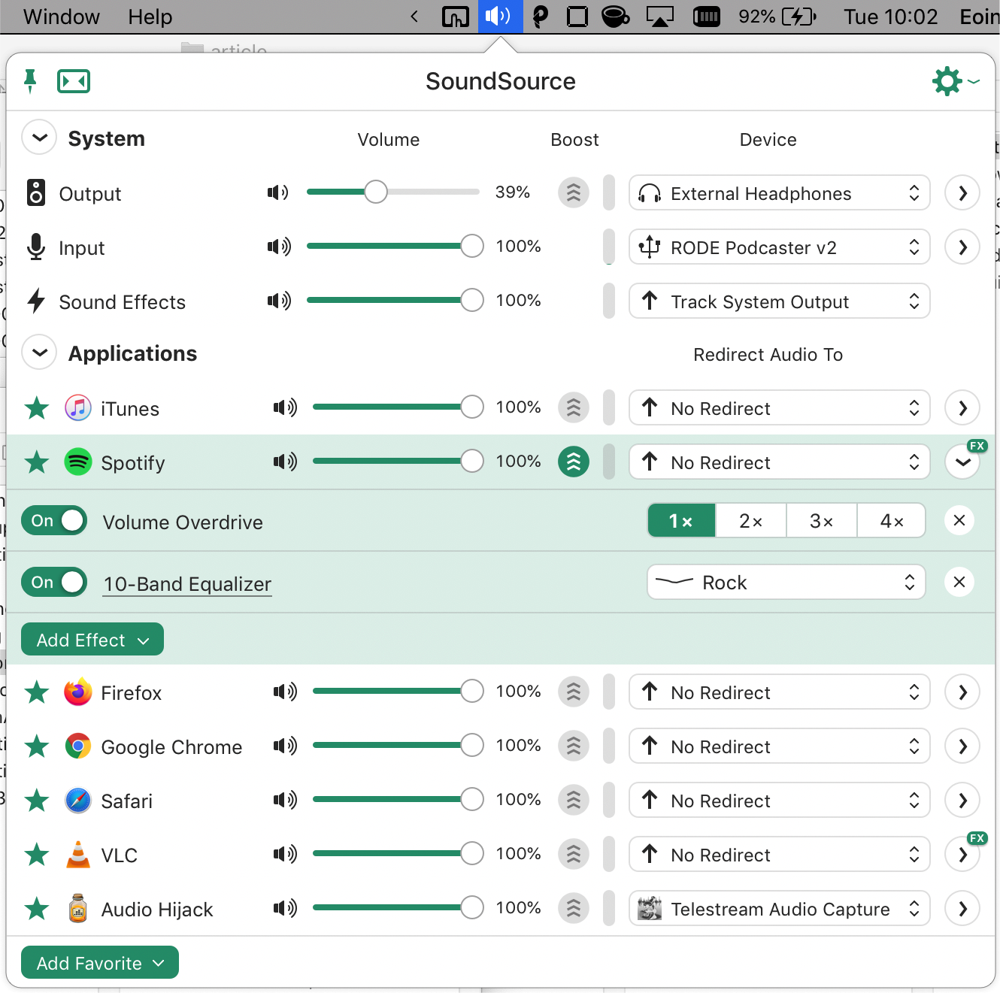
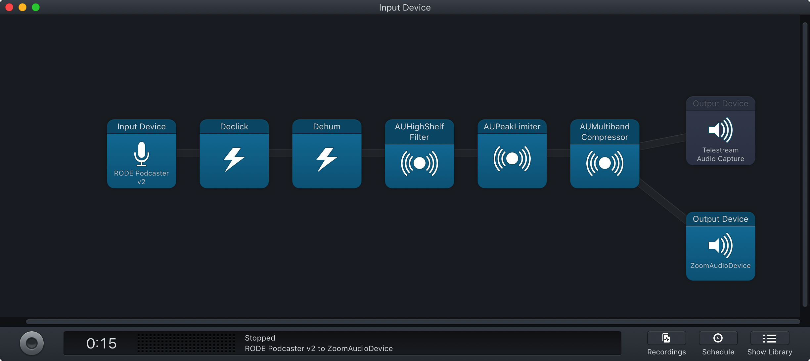
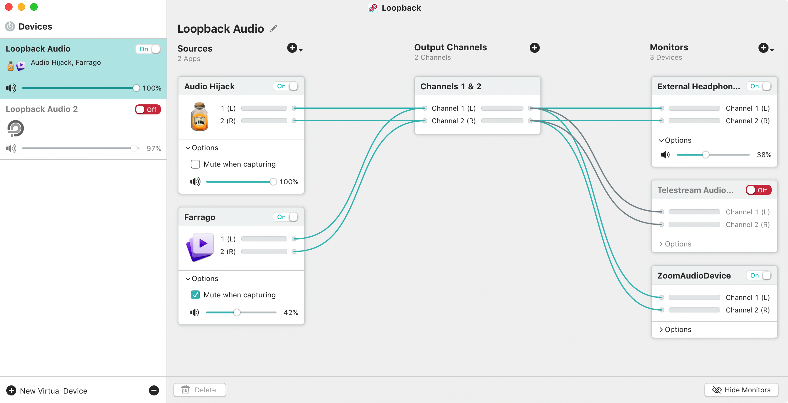

My home office is literally a desk in the corner of a bedroom which is returned to use as a bedroom after I finish work. All the setup and gear I has to fit this requirement.
A fold away desk isn’t a typical order but in Dublin there were two companies, Ministry of Makers and Flying Elephant who supply desks that fit the criteria. I went the Halfway desk from Ministry of Makers and even coated it a few times with Danish Oil for good measure. I couldn’t find a fold away chair that I liked nor could I justify buying an Aeron, in the end I went for a Koplus TONIQUE Ergonomic mesh chair.
My computer is a MacBook and I use it with a Griffin Elavator stand as well as a Logitech wireless m570 trackball mouse. I use an EditorsKey Vi cover on it which probably has saved it from disaster too often to count. I use a Logitech C920 web cam instead of the Macbook standard webcam, it’s definitely an improvement.
I upgraded my home network during May to a Unifi Dream Machine and FlexHD primarily inspired by this post from Troy Hunt. It has been brilliant and I can’t recommend it highly enough.
I use two different audio recording configurations, the normal day to day uses a Rode Podcaster USB Broadcast Microphone, a PSA1 Studio Boom Arm and SMR Advanced Shock Mount for my normal calls (typically Zoom). I use a second setup for recording voice overs which uses a Countryman E6 Omni XLR (over ear mic) and a Senal XLR-USB XU-1648. These are fed through some audio software I’ll cover separately.
I use a set of closed Audio-Technica ATH-M40X for my headphones.
My lighting is from a Elgato Key Light Air and a LumeCube Video Conference Lighting for Remote Working. I only recently got the Elgato and it’s replaced LumeCube as my main light. I plan on using the much smaller LubeCube as a secondary light or when traveling.
I use a HooToo USB C Hub to manage all the peripherals. I have a few extras pieces that I use for teaching including a Luna Display (allows me to use an iPad as a second screen and indeed input to my laptop), a pair of Joby Gorillapod tripods, and a MEKO Upgraded Fine Tip Stylus Pen for an iPad. I also have a Joby GripTight Pro 2 which I use to hold my phone as an ad-hoc whiteboard with the Camo app. I have also been experimenting with OBS Open Broadcast Software.
I also have a pack of Video Conference Cards from Agile Stationery which are great fun to use.
I use Vanilla to manage the menu bar, Amphetamine to keep my laptop on, Keyboard Maestro for various macros, BetterTouchTool for a nice toolbar, and Witch for window screen switching. I use SnapNDrag Pro for screen or window captures. I use ScreenFlow for capturing the voice overs of lessons and indeed any video offline capture.
In terms of my audio software, I went all in on Rogue Amoeba and love all of their software. I use SoundSource for managing my sources, Audio Hijack for various tasks including some preprocessing on my mic input, Loopback for wiring my Audio Hijack output to my Zoom or desired application, and Farrango for adding the odd random sound effect.


